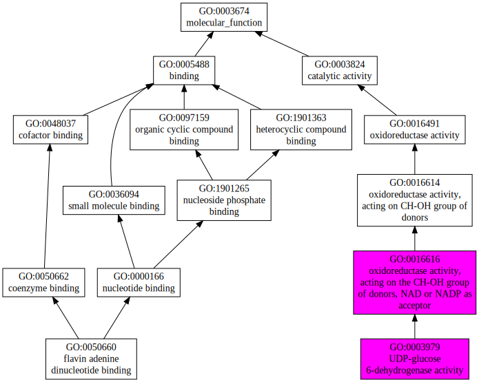
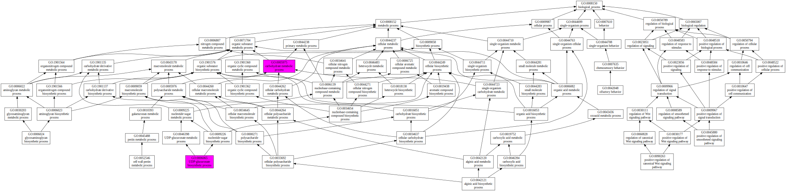

|

|
| GO term | CscoreGO | Name |
| GO:0016616 | 0.36 | oxidoreductase activity, acting on the CH-OH group of donors, NAD or NADP as acceptor |
| GO:0003979 | 0.28 | UDP-glucose 6-dehydrogenase activity |
| GO:0050660 | 0.01 | flavin adenine dinucleotide binding |
| Download full result of the above consensus prediction. |
| Click the graph to show a high resolution version. |
| (a) | CscoreGO is the confidence score of predicted GO terms. CscoreGO values range in between [0-1]; where a higher value indicates a better confidence in predicting the function using the template. |
| (b) | The graph shows the predicted terms within the Gene Ontology hierachy for Molecular Function. Confidently predicted terms are color coded by CscoreGO: |
| | [0.13,0.5) | [0.5,0.6) | [0.6,0.7) | [0.7,0.8) | [0.8,0.9) | [0.9,1.0] |
|
|
|

|
| GO term | CscoreGO | Name |
| GO:0008152 | 0.30 | metabolic process |
| GO:0006065 | 0.12 | UDP-glucuronate biosynthetic process |
| GO:0005975 | 0.12 | carbohydrate metabolic process |
| GO:0006024 | 0.03 | glycosaminoglycan biosynthetic process |
| GO:0044710 | 0.02 | single-organism metabolic process |
| GO:0090263 | 0.01 | positive regulation of canonical Wnt signaling pathway |
| GO:0052546 | 0.01 | cell wall pectin metabolic process |
| GO:0045880 | 0.01 | positive regulation of smoothened signaling pathway |
| GO:0042121 | 0.01 | alginic acid biosynthetic process |
| GO:0042048 | 0.01 | olfactory behavior |
| Download full result of the above consensus prediction. |
| Click the graph to show a high resolution version. |
| (a) | CscoreGO is the confidence score of predicted GO terms. CscoreGO values range in between [0-1]; where a higher value indicates a better confidence in predicting the function using the template. |
| (b) | The graph shows the predicted terms within the Gene Ontology hierachy for Biological Process. Confidently predicted terms are color coded by CscoreGO: |
| | [0.08,0.5) | [0.5,0.6) | [0.6,0.7) | [0.7,0.8) | [0.8,0.9) | [0.9,1.0] |
|
|

|
| Download full result of the above consensus prediction. |
| Click the graph to show a high resolution version. |
| (a) | CscoreGO is the confidence score of predicted GO terms. CscoreGO values range in between [0-1]; where a higher value indicates a better confidence in predicting the function using the template. |
| (b) | The graph shows the predicted terms within the Gene Ontology hierachy for Cellular Component. Confidently predicted terms are color coded by CscoreGO: |
| | [0.14,0.5) | [0.5,0.6) | [0.6,0.7) | [0.7,0.8) | [0.8,0.9) | [0.9,1.0] |
|
|
|